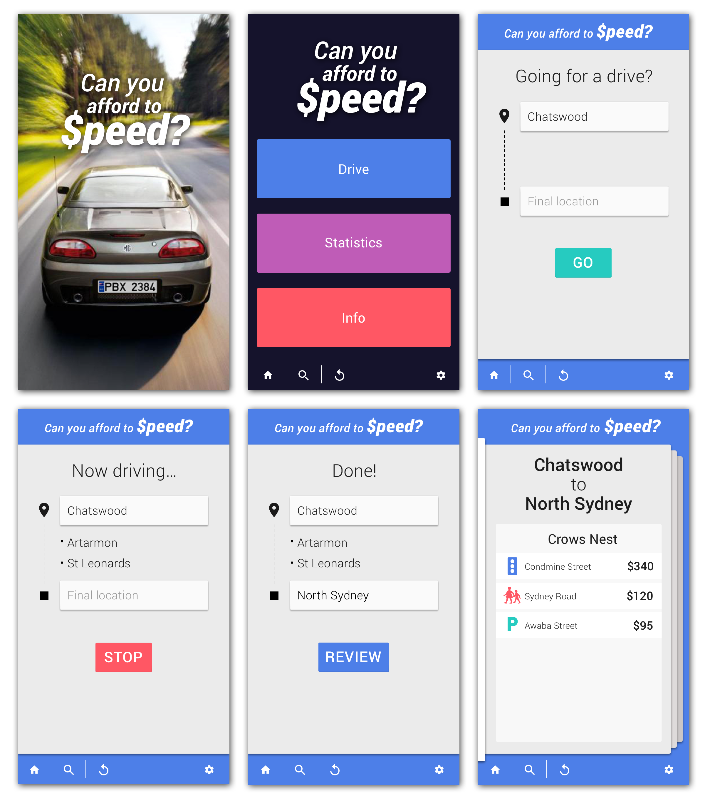

A quick way to visualise the cost of speeding.
The 'Can you afford to Speed?' app assists NSW drivers to avoid speeding fines. The app shows high risk locations based on actual journeys and attaches a dollar amount to risk points along the way.
Check out our web app!Retrospective journeys
Retrospective journeys are currently featured in our app, allowing users to document suburbs passed through. After their journey, they are able to review the top 5 things to watch out for in each suburb. This ensures that they are not looking at their phones while driving. Using a swipe motion they can navigate through the suburbs in a simple way.
Search ahead of time
Users are able to search by suburb to understand the most expensive traffic offences ahead of time. By viewing the ‘Statistics’ page, they can select a suburb, then an offense for which they have the highest concerns (e.g. red light cameras, parking fines). The results for the costliest fine will be displayed first.
Simple, easy to use design
Our design is very simple. There's a home screen, two functions and a back button. At any point in time users do not have to tap more than three times to navigate anywhere on the app.
Vote, watch and experience
Vote for us! Click 5 stars!
On the Hackerspace website.
Video introduction
Watch our video
'Can you afford to Speed?' on GitHub
Check out our github.com repo.
Our competition entry categories
Our team
Hi everyone! We’re the “The Manly Squirrels”, a team of recent grads who’ve banded together to have fun, produce something relevant and make a positive contribution to Australia.
You can find our team assembled below although beware, we have a mild fascination with squirrels…
Big Daddy Squirrel – Alan Yeung is our tech lead, he means business! He stayed up all of Saturday night coding after an unfortunate occurance led him to be the sole data and coding dude, props big daddy!
Fluffy Squirrel – Tiffany Leung, is our SCRUM master and one of our Visual Designers. She loves planning and organising and sometimes runs around excitedly… like a squirrel.
Miss Zen Squirrel – Tina Kim, is our marketing guru, negotiation master and is also a Visual Designer. She has a winning attitude and many wise words to share.
Sporty Squirrel – Suzanne Cengia, is our recent UX grad and UI Designer. She likes getting outdoors to frolick in the sunshine with friends.
Want to find out more? alan [at] alanyeung.net
Application data sets
Our purpose
In the financial year between 2013-2014, $43.4 million dollars were spent on speeding offences alone. This is a 23% increase from two years before. We’ve all seen speeding campaigns before, and no one likes fines.
So why are drivers in New South Wales (NSW) continuously paying more on speeding?
There may be a number of reasons why.
- Unless we are able to visualise the immediate consequence to oneself, it is difficult to imagine that the immediate act of speeding could result in a penalty, especially given that the future consequence has not happened yet.
- It is difficult to link the immediate act of speeding with potentially harming oneself and others.
Our Hack Vision
We would like to empower drivers in NSW to become more aware and help make speeding consequences personal for each of the drivers in hope that our roads will become a safer place for all (and also help Australians save $43 million dollars!)
Our idea is to help drivers understand how their potential actions could impact their own pocket. By visualising the dollar amount other drivers have spent in the locations that they have travelled through when speeding.
Future enhancements
Real time journeys will be executed in version 2.0 by the way of a voice notification while users are passing through a suburb. Examples of voice notifications include:
In the voice of Morgan Freeman: “You sir are speeding, the fine is $300 if caught.”
In the voice of Tony Abbott: “Speeding in a school zone here means more money for the state.”
The voice notification ensures that users are able to concentrate on driving and engaged on notification content (since it’s funny) rather than be distracted by their phone.
Other little enhancements:
Maps: future versions will have JP Map plug-ins which can take in Geo coordinates and show your journey with a Google Maps overlay.
Points tracker: a future app feature where users can track the number of points on their licence. Can you afford to $peed will notify users of both financial and demerits for each offence.
School Zone notifications: an enhancement so that school zone notifications are only shown during school zone hours.